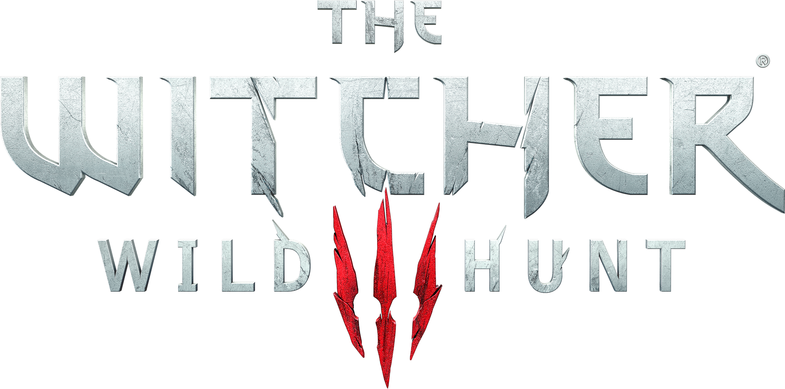
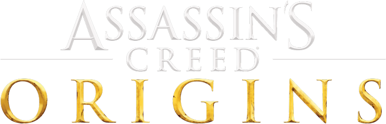
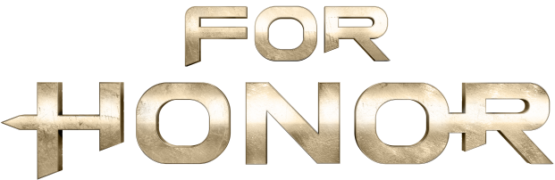

Мои любимые игры(с использованием тега):
- The Witcher Trilogy

«Ведьмак 3: Дикая Охота» (польск. Wiedźmin 3: Dziki Gon) — мультиплатформенная компьютерная игра в жанре action/RPG, разработанная польской студией CD Projekt RED по мотивам серии романов «Ведьмак» польского писателя Анджея Сапковского, выпущенная в 2015 году для Windows, PlayStation 4 и Xbox One. Игра является продолжением компьютерных игр «Ведьмак» и «Ведьмак 2: Убийцы королей», заключительной частью трилогии.
Действие игры происходит в вымышленном фэнтезийном мире, напоминающем средневековую Европу. Главный герой Геральт из Ривии, «ведьмак» — профессиональный охотник на чудовищ — отправляется в путешествие в поисках девушки по имени Цири, обладающей сверхъестественными способностями. В отличие от предыдущих игр серии, «Ведьмак 3: Дикая Охота» — игра с открытым миром: игрок может свободно путешествовать по обширным территориям, самостоятельно находя новые места и задания.
- Deus Ex: Mankind Divided
Deus Ex: Mankind Divided (с англ. — «Deus Ex: Разделённое Человечество») — мультиплатформенная компьютерная игра в жанре Action/RPG с элементами стелс-экшена, разработанная канадской компанией Eidos Montreal и изданная японским холдингом Square Enix. Является сиквелом игры Deus Ex: Human Revolution, вышедшей в 2011 году и четвёртой основной игрой в серии Deus Ex. Действие Mankind Divided разворачивается в 2029 году — спустя два года после событий Human Revolution и за 23 года до событий первой игры Deus Ex. Главным героем игры по-прежнему является Адам Дженсен.
Первоначально игра была выпущена для платформ Windows, PlayStation 4 и Xbox One в 2016 году. Позже в том же году состоялся релиз версии для Linux, а в 2017 году - для macOS.
- Assassin`s Creed Origins

Assassin’s Creed Origins (рус. Assassin’s Creed Истоки) — мультиплатформенная компьютерная игра в жанре Action/RPG, разработанная студией Ubisoft Montreal и издана компанией Ubisoft. Является десятой игрой из одноимённой серии игр. Выпуск игры состоялся 27 октября 2017 года на платформах Windows, PlayStation 4 и Xbox One.
Действие игры разворачивается в Эллинистическом Египте во время правления Клеопатры. Главным героем выступает Байек — меджай, который защищает свой народ от угроз. Открытый мир позволяет игрокам свободно перемещаться по Египту. Игра воспроизводится от третьего лица, и её мир можно исследовать пешком, на лошади, на верблюде или на лодке.
По словам исполнительного директора Ubisoft Ива Гиймо, за десять дней на рынке было продано в два раза больше копий Assassin’s Creed: Origins, чем два года назад сумела добиться Assassin’s Creed: Syndicate за тот же период.
- For Honor

For Honor (с англ. — «За честь») — компьютерная игра, hack and slash файтинг с видом от третьего лица. Выпущена компанией Ubisoft для ПК, PlayStation 4 и Xbox One. В For Honor игроки могут управлять различными формами исторических солдат и воителей, из различных фракций, а именно: викингов, рыцарей и самураев (с октября 2018 года, новой фракцией У Линь). Действие игры происходит в средневековом сеттинге.
- Tom Clancy's Ghost Recon: Wildlands
Tom Clancy’s Ghost Recon Wildlands — мультиплатформенная компьютерная игра в жанре тактического шутера, разрабатываемая Ubisoft Paris. Игра была анонсирована на E3 2015 года. Это первая игра с открытым миром во франшизе Ghost Recon. Игра вышла на платформах Windows, PlayStation 4 и Xbox One. Закрытое бета-тестирование игры проходило с 3 по 6 февраля 2017 года на платформах Windows, PS4 и Xbox One. Открытое бета-тестирование игры проходило с 23 по 27 февраля 2017 года на тех же платформах.